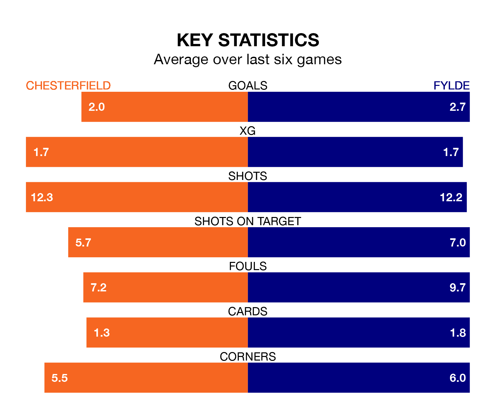

Chesterfield host Fylde in Saturday's match at the SMH Group Stadium looking to bounce back from defeat last time out in the National League.
The Spireites, who sit top of the league after 36 games, fell to a 4-1 away defeat to Dorking Wanderers on March 2.
They face a Fylde side who picked up a win in their last match, a 3-1 victory against York City, and who sit 15th in the table.
With 87 goals in 36 games so far this season, Chesterfield are the league's highest scorers with 2.4 goals per game. And they are conceding fewer than average, letting in 48 goals at a rate of 1.3 per game.
Fylde are also above average scorers, with 1.7 goals per game, compared to a league average of 1.5. They have conceded 1.8 goals per game.
In the last 10 years, Chesterfield and Fylde have played each other on six occasions. Chesterfield won four of them and they drew twice.
On average, the Spireites scored 2.0 goals and the Coasters 0.8 in those matches.
Their last meeting was on August 12, when Chesterfield won 4-2 away.
The Spireites are in mixed form in the National League, with two wins and two draws from their last six games.
With three wins and a draw over that period, the Coasters's form is slightly better – they have taken 10 points from 18, compared to the home team's eight.
Updated: 09:34 (UTC), 08/03/24